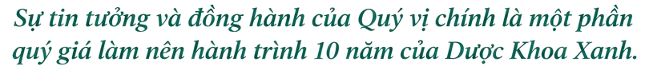

Dược Khoa Xanh xin gửi lời cảm ơn chân thành nhất đến Quý Khách hàng, Quý Đối tác đã hiện diện và cùng chúng tôi tạo nên những khoảnh khắc đáng nhớ trong Lễ kỷ niệm 10 năm thành lập (2016 – 2026).

Chúng tôi luôn ghi nhận và trân trọng sự tôn trọng, đồng hành của Quý vị trong suốt thời gian qua. Trong quá trình tổ chức buổi lễ, nếu còn điều gì sơ suất, thiếu sót, Dược Khoa Xanh kính mong Quý vị thông cảm và bỏ qua.
Trân quý chặng đường đã qua, Dược Khoa Xanh mong tiếp tục nhận được sự đồng hành của Quý vị, cùng nhau kiến tạo những giá trị bền vững vì sức khỏe Mẹ và Bé trong tương lai. Chúng tôi cam kết không ngừng nâng cao chất lượng sản phẩm, dịch vụ theo tiêu chí An toàn – Hiệu quả – Khoa học. Kính chúc Quý vị sức khỏe, hạnh phúc và thành công!